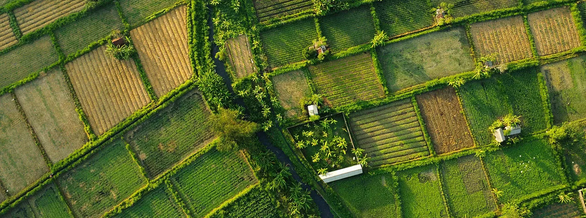
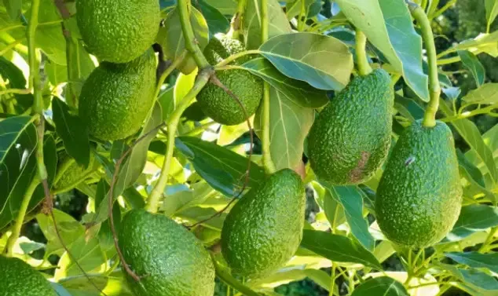
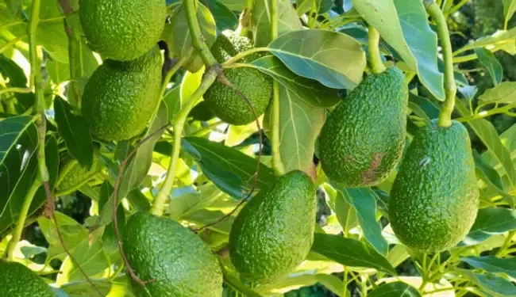
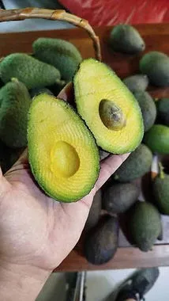
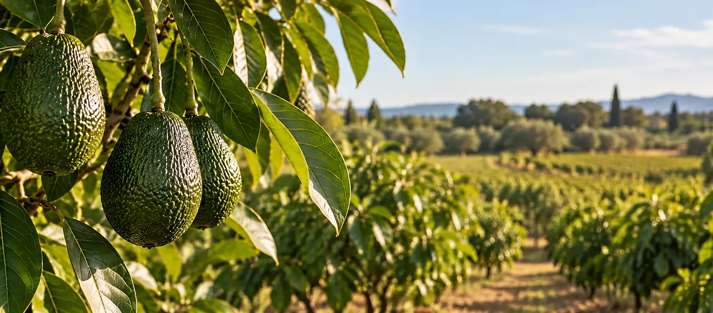
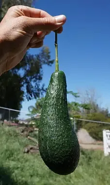
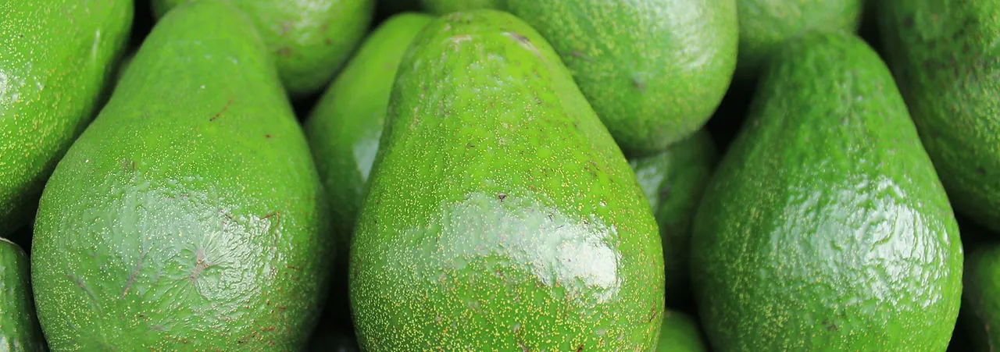
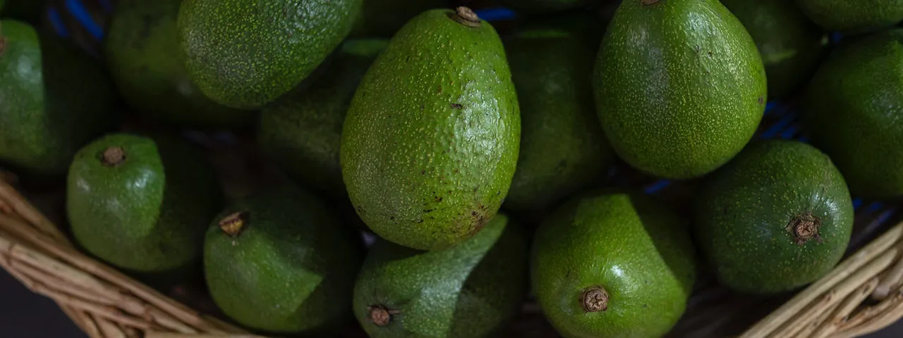

La nostra finca
Arrels de l'Empordà
Un projecte nascut de la terra, cultivat amb cura a Pedret i Marzà.
La nostra història
Una passió que neix de la terra
Arrels de l'Empordà neix del nostre vincle amb aquesta terra única. Un somni familiar que comença a Pedret i Marzà, al cor de l'Alt Empordà, on el clima, el paisatge i la tranquil·litat ens van enamorar des del primer dia.
Avui, aquest projecte és una realitat: una finca d'alvocats que cuidem amb il·lusió, respecte i un gran amor per la natura.

Com cultivem
Amb respecte i en harmonia
Treballem seguint mètodes de cultiu sostenibles, respectant el ritme de la terra i el seu entorn. Cuidem cada arbre de manera responsable per obtenir alvocats de gran qualitat, sans i plens de sabor.
Creiem en una agricultura que cuida el present i també el futur, conservant la biodiversitat i la riquesa del nostre paisatge.

De l'arbre a casa teva
Alvocats amb essència mediterrània
Recollim els alvocats en el moment òptim de maduració i te'ls fem arribar directament des de la nostra finca, sense intermediaris. Així garantim un producte fresc, de proximitat i amb tot el sabor de l'Empordà.
La finca en imatges
Un entorn privilegiat




